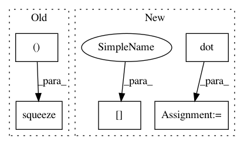

2e296adb05f62e4821c36b6f42b1470bdb10eaa6,geomstats/special_euclidean_group.py,SpecialEuclideanGroup,compose,#SpecialEuclideanGroup#Any#Any#,64
Before Change
composition_rot_mat)
composition_translation = (np.dot(translation_2,
np.transpose(rot_mat_1,
axes=(0, 2, 1)))
+ translation_1)
composition_translation = np.squeeze(composition_translation, axis=1)
composition[:, :dim_rotations] = composition_rot_vec
composition[:, dim_rotations:] = composition_translation
After Change
rot_mat_1_i = (rot_mat_1[0] if n_points_1 == 1
else rot_mat_1[i])
translation_2_i = (translation_2[0] if n_points_2 == 1
else translation_2[i])
composition_translation[i] = (np.dot(translation_2_i,
np.transpose(rot_mat_1_i))
+ translation_1_i)
composition = np.zeros((n_compositions, self.dimension))
composition[:, :dim_rotations] = composition_rot_vec
composition[:, dim_rotations:] = composition_translation
In pattern: SUPERPATTERN
Frequency: 3
Non-data size: 5
Instances
Project Name: geomstats/geomstats
Commit Name: 2e296adb05f62e4821c36b6f42b1470bdb10eaa6
Time: 2018-02-05
Author: ninamio78@gmail.com
File Name: geomstats/special_euclidean_group.py
Class Name: SpecialEuclideanGroup
Method Name: compose
Project Name: danielegrattarola/keras-gat
Commit Name: 9d56361641a64ff73ac630812ecd4964eedbc7aa
Time: 2017-11-09
Author: daniele.grattarola@gmail.com
File Name: gat/graph_attention_layer.py
Class Name: GraphAttention
Method Name: call
Project Name: nipy/dipy
Commit Name: ba8bfb474b108565ac8f77544d0aeb8b1a9a0fdc
Time: 2011-02-09
Author: garyfallidis@gmail.com
File Name: dipy/reconst/dandelion.py
Class Name: SphericalDandelion
Method Name: spherical_diffusivity